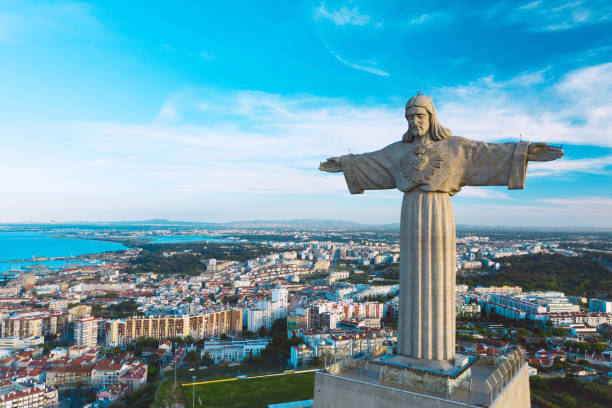
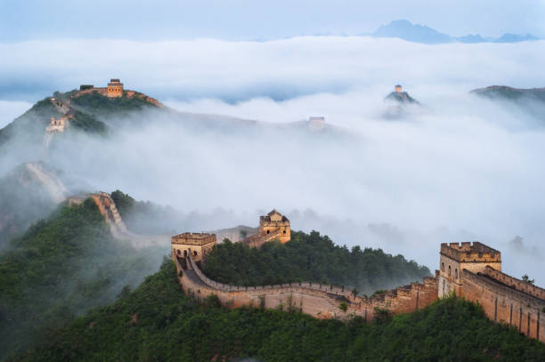
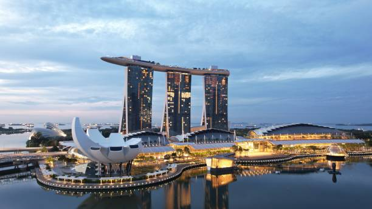
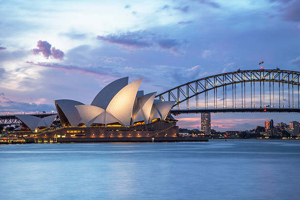

Viajes al exterior
Brasil
Rio de Janeiro
Es una elección que promete una experiencia rica en cultura, naturaleza exuberante, playas paradisíacas y una diversidad gastronómica excepcional.
China
Muralla China
La Gran Muralla China es uno de los símbolos más representativos de China y una de las Siete Maravillas del Mundo. Ofrece un paisaje montañoso impresionante con vistas espectaculares.
Singapur
Singapur
Singapur, conocida como la “Perla de Asia”, ofrece una vitalidad especial que combina historia, multiculturalidad, arte y ciencia, ademas de sus impresionantes rascacielos y arquitectura moderna.
Inglaterra
Londres

Londres, la capital de Inglaterra y del Reino Unido, tiene una rica historia que se remonta a los romanos. una ciudad fascinante con una rica historia y una mezcla vibrante de culturas.
Italia
Roma

Ciudad italiana con una rica historia que se remonta a 753 a.C.. . Hoy, pasear por las calles de Roma es un viaje al pasado que te conecta con su legado milenario.
Australia
Sidney
La ciudad más grande y poblada de Australia y Oceanía, destaca por la Casa de la Ópera, el puente de la bahía, y sus playas.
Qatar
Doha

Doha, la capital de Catar, ofrece una mezcla fascinante de modernidad y tradición.
Rusia
Moscu

Moscú, la capital de Rusia, es una ciudad vibrante y sorprendente con una rica historia y una mezcla fascinante de culturas.